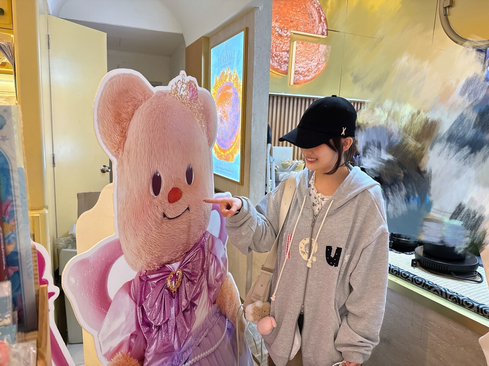

橘杏咲の立ち話もなんですから！ 第20回橘杏咲的“站着聊可说不完！” 第20回
皆さんこんにちは☘️☁️
大家好☘️☁️
最近くしゃみが止まりません。概念としては好きだけれど環境としてはかなり苦手な春がやってくる気配を感じる今日この頃です。
最近喷嚏打个不停。虽然作为“概念”来说我很喜欢春天，但作为“环境”实在应付不来——近来已然感受到这样的春天正悄悄逼近的气息。
先月のコラムでお話ししましたが、寒いと少しだけ暗い気持ちになってしまうので少しずつ暖かくなってきてくれて嬉しいのですが、花粉。あなただけが本当にいやです。
上个月的专栏里也提过，天一冷我的心情就会稍微变得有些低落，所以天气渐渐回暖我其实很开心，唯独花粉——就只有你，我真的受不了。
春はお洋服が可愛くて好きですと言おうと思ったのですが、これ冬にも言ってましたね。明るい色のお洋服がお店にたくさん並んでいるあの景色が好きです。花柄やレース素材のものも増えてくるあの雰囲気、とっても大好きです。
本来想说“我很喜欢春天，因为春装很可爱”，不过这话冬天我也说过呢。我好喜欢店里摆满明亮色系衣服的那幅景象，碎花和蕾丝材质的单品也越来越多，那种氛围我实在爱得不行。
三月は寂しさと期待が入り混じる季節だなと。卒業や引っ越しなど慣れ親しんだ環境からの旅立ちはやっぱり寂しいけれど、次なる新たな環境への期待もある。そんな気持ちがソワソワしてしまう季節ですよね。目や鼻もソワソワしますが。
我觉得三月是个寂寞与期待交织的季节。毕业、搬家之类的，离开熟悉的环境踏上新征程果然还是会觉得不舍，但同时又怀揣着对下一个新环境的期待。真是个让人心里悸动难安的季节呢——虽说眼睛和鼻子也跟着躁动难安就是了。
私たちの感情メーターを四象限としたとき、基本的に軸にしっかり重なってどこかに極振りした状態になることって普段無いと思うんですよ！だからこそ感情の言語化は難しいと思いますし、難しい、苦手と言っている人をたくさん見かけますがそりゃそうですよね…。私はその言語化できない纏まらないそのなんとも言えないもどかしい感じが好きなので、春は好きです(?)
如果把我们的情绪仪表盘看作一个四象限坐标系，平时基本上是不会严丝合缝地压在坐标轴上、彻底偏向某一端的吧！正因如此，把情绪语言化才那么困难，我也经常看到很多人说这很难、自己不擅长，那可不嘛……不过我反而很喜欢那种无法用语言概括、理不出头绪、说不清道不明的微妙焦灼感，所以我是喜欢春天的（？）
また意味の分からないことを言っていますがつまり、この世の全ての事象って白がある時また黒もあって、混ざり合っているようで独立しているよねみたいなことを言いたかったです。根本的な考え方を言おうとしてもこうなってしまうこの感じ！なんていうんだろう。これに名称があったら教えてください。
我又在说些让人摸不着头脑的话了，总之我想表达的是，这世上的万事万物好像都是有白的时候同时也伴着黑，看似交融混杂却又彼此独立吧。想说明自己最根本的思考方式，结果一开口又绕成这样！这种感觉到底该怎么形容呀？如果它有专门的名称请务必告诉我。
人間らしい、というか。私は基本人間が好きですが、こういうところが好きたる所以だと思います。
怎么说呢，很有“人味儿”吧。我打心底里是喜欢人类的，而这大概正是我喜欢人类的缘由所在。
人間の話になってしまったコワい。春のお話しに少し戻ると、私が今年の春にゲットしたいものがいくつかあるんです！薄手の可愛い上着、ローファー、春っぽい帽子！この三つです。早速明日どこかに見にいこうかしら。冬はずっとモノクロばかり身に纏っていたので、せっかくの春だし少しカラフルなものを手に入れたいなと思っています。
居然聊到人类学上去了好可怕。稍微把话题拉回春天吧，今年春天我有几样很想入手的东西！轻薄的可爱外套、乐福鞋，还有充满春日气息的帽子！就是这三样。要不干脆明天就去哪儿逛逛看吧。整个冬天穿在身上的几乎全是黑白色系，难得春天来了，真想入手一些色彩缤纷的单品呀。
最近ハンドメイドのアクセサリーやチャームが好きで集めてるんですよ〜。チェーンにビーズやリボン、可愛い記号や動物などのパーツがついてるあの感じ…ときめきが止まらなくて見ているだけできゅんきゅんするので大好きです。いつかどこかで可愛いお気に入りアクセ自慢します。
最近我迷上了收集手工饰品和挂件哦〜。链条上缀着串珠、蝴蝶结，还有可爱的小符号和小动物等配件的那种风格……实在让人心动不止，光看着就心花怒放，我太喜欢啦。改天一定要找机会向大家炫耀一下我珍藏的可爱饰品。
三月だからか春休みだからか分かりませんが、最近やりたいことがたくさんあるんです！常に何か新しいことをやっていたい人間なので意欲だけはいつもすごいのですが、今は実践する足も付いてきます。
不知道是因为三月到了还是因为正在放春假，最近我有好多好多想做的事情！我本来就是那种总想尝试新事物的性格，干劲一向爆棚，而现在连付诸实践的行动力也跟上节奏了。
究極の気分屋さんな私ですが、三月が考える前に脚を動かして今だからできるリストを消化していきたいと思います。
虽然我是个究极随性派，但三月我打算先迈开腿再动脑，把“趁现在才能做”的愿望清单好好刷一遍。
2月…すごかった。とんでもない1ヶ月でした。
2月……太厉害了。真是不得了的一个月。
無事に期末が終わり春休みに突入してから、怒涛の1ヶ月だったような気がします。
顺利考完期末步入春假之后，感觉就迎来了一整个风风火火、排山倒海般的月份。
まぁ、なんと言ってもタイでのイベント🇹🇭楽しかった！！
不过呢，最值得一提的还是泰国的活动🇹🇭太好玩啦!!
タイ・バンコクにて開催された「ANIMONIUM 2026」にオルケリアとして出演させていただきました。初めてのタイ、ご飯が美味しくて現地の方もお優しくてショッピングモールも楽しくてで全力で楽しんじゃいました。
我以 ORCHERIA 成员的身份登上了在泰国曼谷举办的“ANIMONIUM 2026”舞台。这是我第一次去泰国，美食超好吃、当地人也很亲切、逛商场也乐在其中，简直全程尽兴玩了个痛快。
印象的なのは、プーパッポンカリー！カニのカレー的なものなのですが、甘口で美味しんです。炒飯？にたくさんかけて食べました。その時に一緒にイカのガーリック炒めも食べたのですが、それもまた美味しくて、限界まで食べました。
印象最深的是“プーパッポンカリー”（泰式咖喱炒蟹）！算是蟹肉咖喱一类的料理，味道偏甜超级美味。我往像是炒饭一样的米饭上浇了满满一大勺吃。那顿还一起吃了蒜香炒鱿鱼，也是好吃得不行，直接吃到撑到极限。
コンビニに売っていたスナックやインスタントラーメンなども美味しくてたくさんお買い物して帰りました。お買い物ができるタイミングがかなりあったので色々ゲットできたのですが、ショッピングモールを見ているだけで楽しくて…。日本由来のお店や日本の商品もたくさんあったんですよ！日本語見かけるたびホッとしていました。
便利店里卖的零食和方便面也很好吃，我大买特买了一堆带回国。这次逛街的空档相当充足，入手了好多东西，而且光是在商场里闲逛就觉得好开心……那里还有好多来自日本的店铺和日本商品哦！每次看到日文都会有种松了一口气的安心感。
すごくリアルなフルーツ石鹸や海苔のお菓子、マンゴーグミにスースーするやつなど色々お買い物できたのですが、なんと言ってもやっぱりこの子！バターベア！可愛過ぎました！！！
超逼真的水果造型香皂、海苔零食、芒果软糖，还有那种闻起来凉飕飕的小玩意儿（鼻通）等等，买了一大堆战利品，但要说最重磅的果然还得是这位！黄油小熊（Butterbear）！实在太可爱了!!!
実はタイへ行く前に、同じくタイへ向かう本村玲奈ちゃんとお話しできた時があってその時にれなちゃんからバターベアの存在を教えてもらったんです。かわいいが大好きな私はしっかりすぐに絶対お迎えしたいリストに入れてずっと一緒にいる皆さんにバターベアがいたら教えてくださいと言いまくっていました。
其实去泰国之前，我有机会和同样要赴泰的本村玲奈酱聊过天，就是那时候玲奈酱向我安利了黄油小熊的存在。酷爱可爱事物的我立刻二话不说把它加进“绝对要带回家清单”，一路上不停嘱咐身边的大家：“要是看见黄油小熊请一定要告诉我！”
なので出会えて、お迎えできてめちゃめちゃ嬉しかったです！！私は星モチーフちゃんと真っ白フリフリエプロンなベアーちゃんをお迎えできました。妹にもアイスなベアーちゃんをあげました。喜んでくれて嬉しかったぁ。
所以真的遇上并且成功接回家的时候，开心得简直要飞起来了!! 我给自己收了星星主题款和纯白荷叶边围裙款的小熊，还给妹妹带了一只冰淇淋款的小熊。看到她那么喜欢，我也好开心呀。
バターベアさんとご対面な私。
与黄油小熊小姐正式会面的我。

いやもうとにかく楽しい海外遠征でした。これに尽きる！
唉呀，总之这是一趟无比快乐的海外远征。千言万语汇成这一句！
タイから帰国してからもイベントが盛りだくさんでしたね。ららぽーとで行われたプリオケDAY！初めてのフリーイベント、たくさんの方に集まっていただけて嬉しかったです。どこを見ても皆さんがいらっしゃって新鮮でした。小さなお友達にもたくさん会えて嬉しかったな。こういうイベントもとっても貴重ですしね…最高の思い出になりました✨
从泰国回国之后，各种活动也是接连不断呢。在 LaLaport 举办的《Princession Orchestra》DAY！这是我们第一次举办免费开放活动，看到那么多人聚集而来我特别高兴。放眼望去到处都是大家，感觉特别新鲜，还见到了好多小朋友，真开心呀。这样的活动实在非常珍贵……成了我最棒的回忆✨
そしてお久しぶりな天狼群のリリイベ！今月ついに1stシングルが発売されました！！すごい！！初回限定盤めちゃ大きくてすごいんですよ！！各メンバーのソロバージョンも特別収録されていたりもしてとっても豪華なんです。
接着还有久违的天狼群发售纪念活动！这个月我们的 1st 单曲终于正式发售啦!! 好厉害!! 初回限定盘的尺寸超级大、超级气派哦!! 里面还特别收录了各位成员的独唱版本，配置豪华得不得了。
新しい楽曲たちもめちゃめちゃのめちゃにカッコよくて楽しくて気持ちが良いです。ライブ楽しいんだろうなぁ。あそうです、三月には1stライブも控えています🐺ライブに遊びに行くぞ！なあなた。是非たくさん聴き込んでからいらしてください。全曲ライブなので山を張る必要もありません。一緒にサンダーしましょう。
新歌们也都帅气得不得了、又燃又嗨、畅快极了。演唱会肯定会超好玩吧。啊对了，三月还等着我们的 1st 演唱会呢🐺打算来演唱会一起玩耍的你，一定要把歌单反反复复听透再来哦。因为是全曲披露演唱会，完全不需要押题！让我们一起“Thunder！”起来吧。
他にもお馴染みマブ結川さんのバースデーイベントで全力でお誕生日をお祝いできたり、プリオケオンラインリリイベやカヤちゃんオンラインサイン会などなど過去１イベント盛りだくさんな1ヶ月でした〜！いやぁ、濃かった。楽しかった。生を感じました。
除此之外，还在大家熟悉的挚友结川小姐的生日活动上使出浑身解数帮她庆生，还有《Princession Orchestra》线上发售纪念活动、《神八小妹不可怕》线上签名会等等，真是史上活动最满当的一个月〜！哎呀，太充实了，太开心了，真切感受到了“活着”的实感。
3月も天狼群のライブやカヤちゃんの怪談イベント、アニメジャパンとビッグイベントがたくさんだ！なんて幸せなことでしょう。この幸せを出来るだけ長く感じられるように日々がんばります。。。
3月也有天狼群的演唱会、《神八小妹不可怕》的怪谈活动，还有 AnimeJapan 这么多大型活动！这是何等的幸福呀。为了让这份幸福尽可能长久地延续下去，每一天都要好好努力……
今月まで春休みなので、やらなくてはいけないことやりたいことを出来るだけやってやろうと思います。怠惰ダメゼッタイっ！！あっ、でもエンドフィールドは進めます。四号谷地終盤にいるということとロッシちゃんにメロメロだということだけお伝えしておきます。
春假一直持续到这个月底，所以必须做的事和想做的事，我都打算尽可能一股脑全搞定。坚决向懒惰说不!! 啊，不过《明日方舟：终末地》还是会继续推进度的。这里就先汇报两件事：我现在打到四号谷地后期了，而且彻底被洛茜迷得神魂颠倒。
よし、では3月の目標を、、
好嘞，那就来公布3月的目标吧……
今月の目標はズバリ
本月的目标正是——
「好奇心のアクセル全開でかっ飛ばす！」
《好奇心油门踩满，一路狂飙！》
です！
就是这个！
前回のコラムでは小さな余白を大切にと言いましたが、今の私はやりたいことが大渋滞中です。冬の間に溜めたパワーを、春のカラフルな景色の中で一気に解放していきたいと思います。せっかくの春休み、一分一秒を惜しんで充実させたい！熟考ゾーンに入る前に脚を動かすの精神で、今の自分にしかできないリストを全力で消化する一ヶ月にします。
上一期专栏里我还说着要珍惜小小的留白，可现在的我满脑子想做的事情已经严重大堵车啦。我想把冬天积蓄的能量，在春天缤纷多彩的风景里一口气释放出来。难得放春假，每一分每一秒都要珍惜起来，过得充实满满！秉持着“在陷入深思熟虑之前先把腿迈出去”的精神，把这个月变成全力刷完“只有现在的自己能做的事”清单的一个月吧。
ここまで読んでくださりありがとうございました！
非常感谢大家一直读到这里！
皆さんからの感想、いつも拝見してます！私の無軌道で無造作なあの文章を楽しみにしてくださっている方がいる！？と感想を見るたび小さな驚きと嬉しさが芽生えています笑ありがとうございます。
大家发来的读后感我一直都有在看哦！每次看到感想，心里都会冒出一丝小小的惊讶和喜悦：“居然真的有人在期待我这种天马行空、随手乱写的文字!?”（笑）真的太感谢了。
そんな皆さんにお願いがありまして。今までどんなお話をしていないのか曖昧になってきたということと、皆さんがどんなお話に興味があるのか気になっていて…！トークデッキみたいな感じでこんなお話どこかで聞きたいな〜というのがあったらリプ欄で教えていただけると嬉しいです！
这里我想向大家提一个小请求。因为我自己都渐渐模糊以前还有哪些话题没聊过，再加上也很好奇大家究竟对什么样的话题感兴趣……！就像准备话题卡组一样，如果大家有什么“好想听你聊聊这个呀〜”的选题，欢迎在评论区告诉我，我会非常开心的！
明確な質問などはこの下のメールフォームで受け付けておりますのでそちらにも是非〜！！
具体明确的提问可以在下方的邮件表单里投稿，那边也欢迎大家踊跃来信哦〜!!
ではっ
那么下次见啦！
橘さんに質問！向橘小姐提问！
Q：「かわいい」アイドルや概念が好きな橘さんですが、様々なかわいいを体現したアイドルがいる中で、橘さんが好きなアイドルは誰ですか？（東京都・ゴリ）
问：橘小姐非常喜欢“可爱”的偶像以及“可爱”这个概念，在诠释着形形色色之可爱的众多偶像之中，您喜欢的偶像是谁呢？（东京都·ゴリ）
ゴリさん、ご質問ありがとうございます！
ゴリ，感谢你的提问！
…なんて難しい質問なんでしょうかっっっっっ！！！私のアイドル好き遍歴としてはモーニング娘。さんから始まって、そこからというもの日本のありとあらゆる女の子アイドルさんを見ていまして。本当に難しいです。好きになる子の系統もかなりバラバラで、「かわいい！好き🤍」はもちろん、可愛いが後回しになってしまうくらいパフォーマンスにベタ惚れぇな好きもあるので難しいです。
……这简直是个超级难题啊啊啊啊啊!!! 我的追星历程是从早安少女组。前辈开始的，从那以后日本各式各样的女偶像我几乎看了个遍，真的太难选了。我会喜欢上的类型也相当分散，除了“好可爱！喜欢🤍”之外，还有那种被舞台表现力彻底迷倒、以至于“可爱”都排到后头的喜欢，所以实在太难挑啦。
そうですね、私の原点にして頂点はやっぱり高橋愛さんです。ビジュアルはもちろん歌声、ダンス全てが最上級なんです。いつ見てもすごいしかっこいいし可愛いし綺麗。本当にすごい方です…。実はどハマりした時にはもうアイドルを現役でやられていなかったのですが、小学生？の時に初めて会いに行った時可愛過ぎて圧倒されたのを覚えています。
要说的话，我的原点亦是顶点果然还是高桥爱小姐。颜值自不必说，歌声、舞蹈全都堪称最顶级。无论什么时候看都觉得好厉害、好帅气、好可爱又好漂亮，真是位了不起的前辈……其实我彻底入坑的时候她已经不再是现役偶像了，但我至今还记得大概上小学那会儿，第一次去见她本人时，直接被她的美貌可爱到彻底震撼住了。
お顔が好きだなという子は正直居すぎて、グループに居すぎた結果箱推しになるという事態が発生しまくっています。本当に様々なアイドルグループさんの楽曲を聴いている気がします。やっぱり日本のキラキラアイドルは眩しくて最高ですね。
单说“颜好戳我”的成员实在太多了，结果因为一个团里戳我的成员太多，屡屡发生直接变成团推的状况。感觉我平时真的听过五花八门各个偶像团体的歌。果然日本闪闪发光的偶像耀眼又无敌呀。
キリがないので最後に今聴いている楽曲だけ言い残して終わりにします。
再聊下去就没完没了了，最后就留下一首我现在正在听的歌收尾吧。
今聴いているのは＝LOVEさんの「この空がトリガー」です。MV、大好きです。
此刻正在听的是 ＝LOVE 的《この空がトリガー》。它的 MV 我超级喜欢。